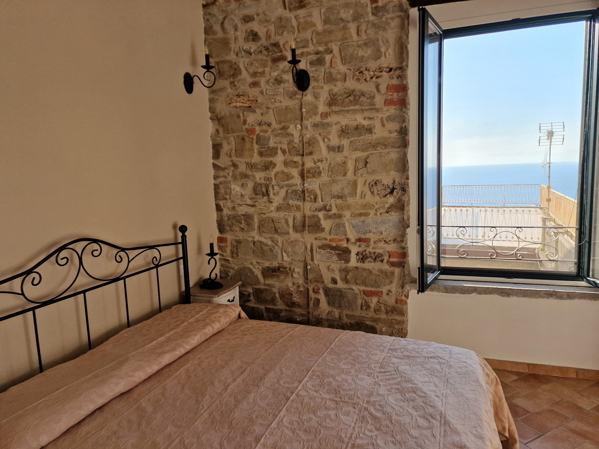
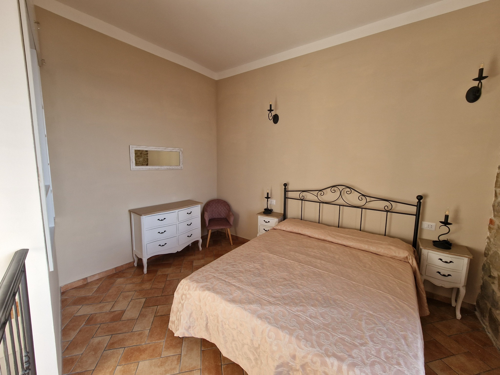
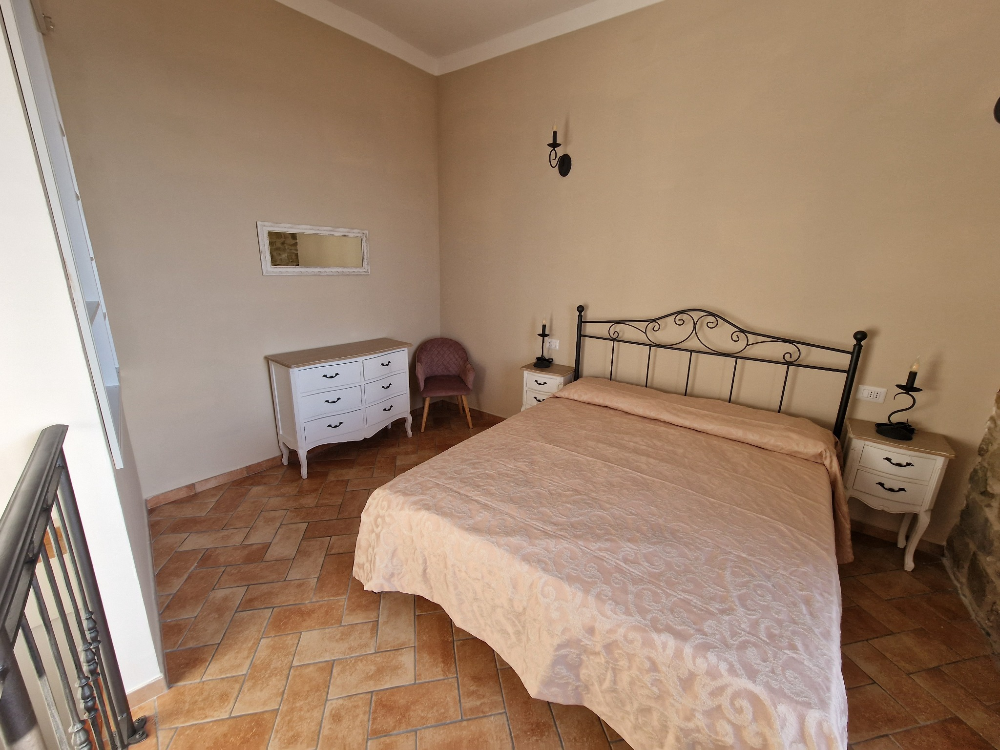
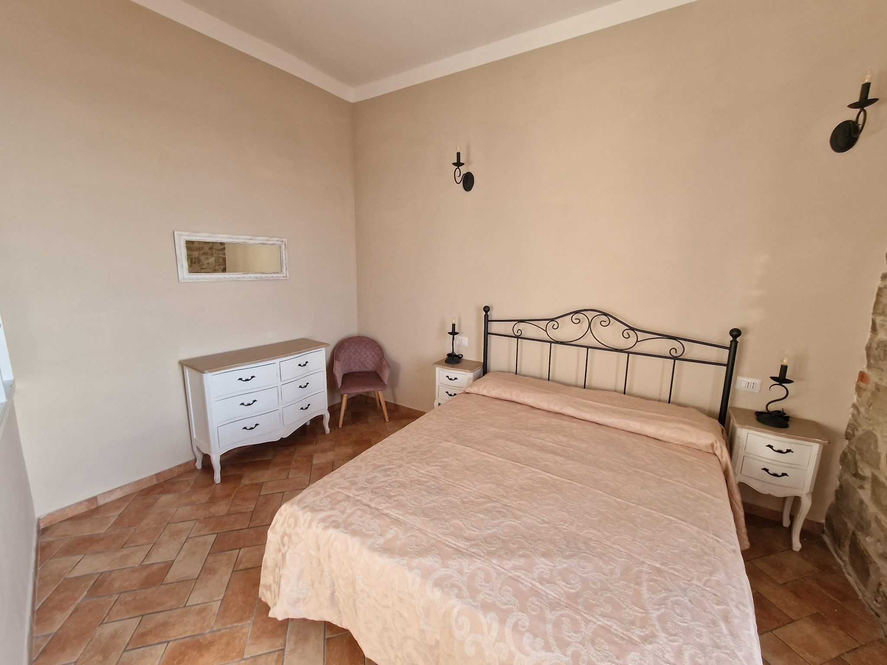
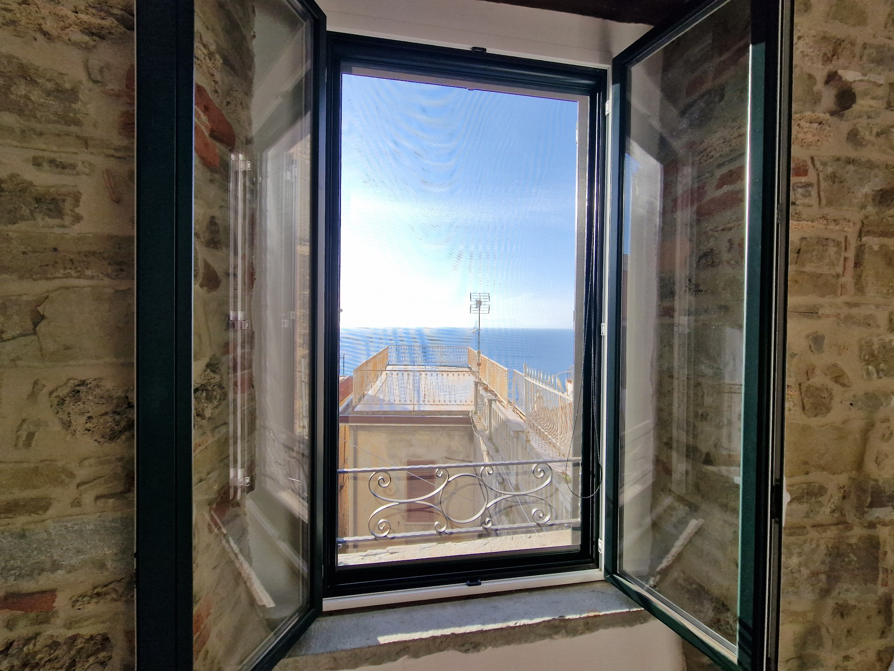
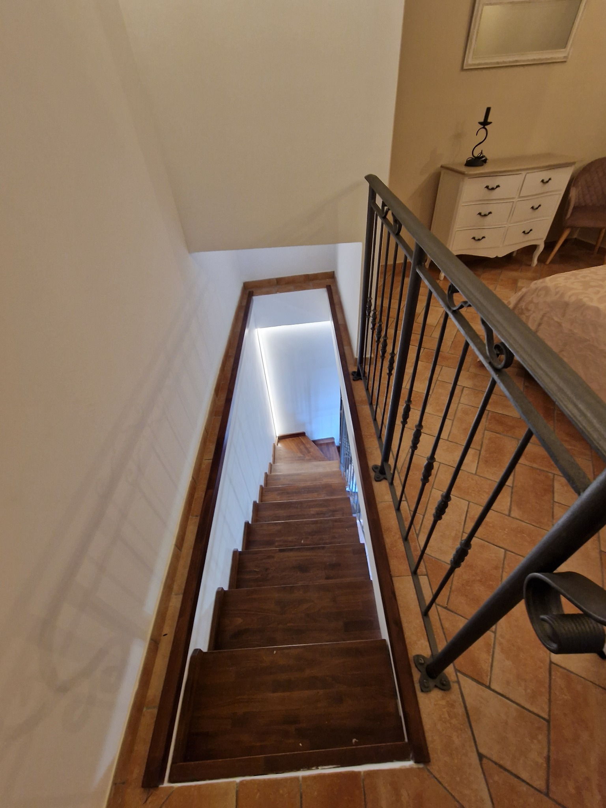
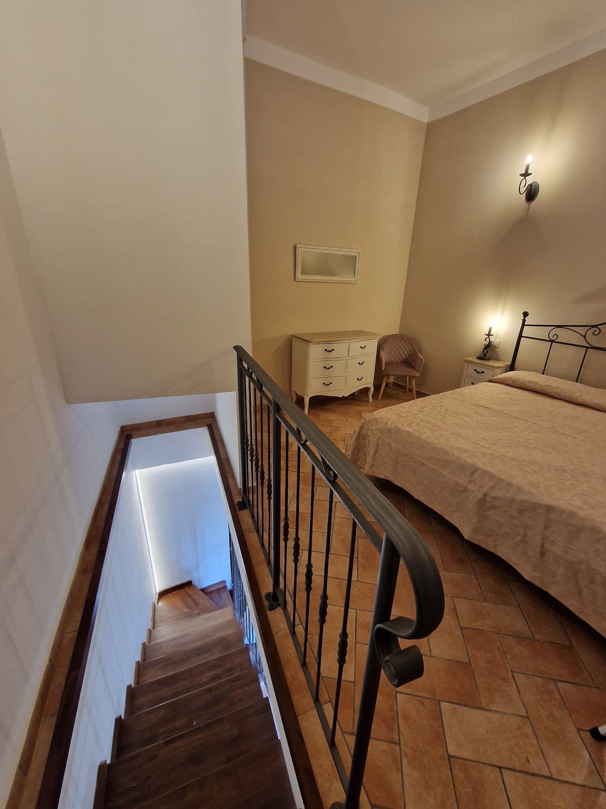
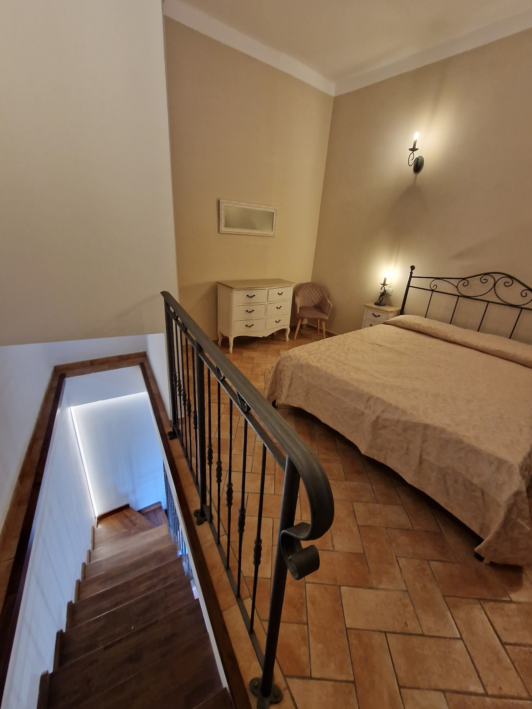
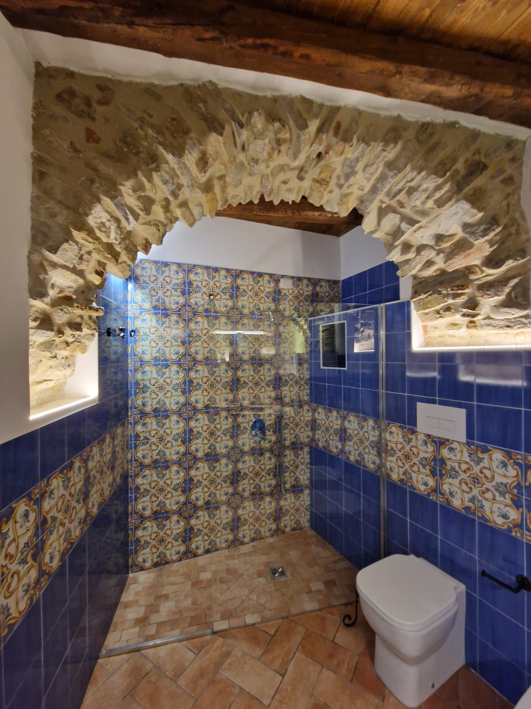
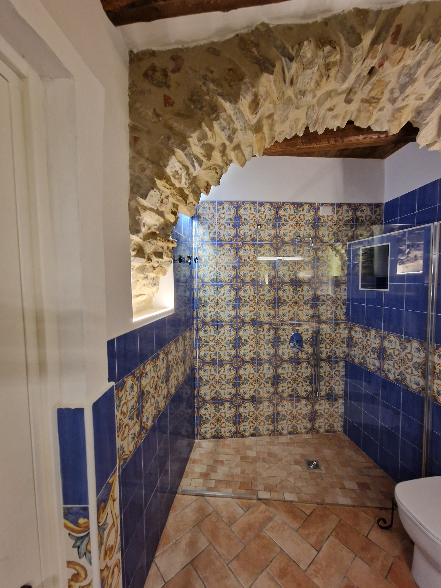

Casa Vacanze – Via del Castello, SNC
Questa seconda casa vacanze, anch’essa caratterizzata da ambienti in pietra e arredamento tipico, rappresenta la scelta ideale per chi cerca tranquillità e comfort nel cuore del borgo.









